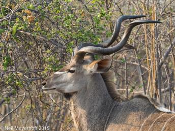
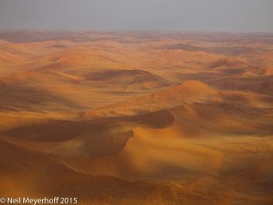

%1
View of Circular Quay and downtown skyscrapers, Syndey, New South Wales, Australia  Click image to enlarge. |
|||
At initial glance this appears to be a picture from the American Southwest, but it is not. These are bluffs and ruined kasbahs along the River Ziz in Errachidia Province. Olympus OMD EM-1, ISO 200, 19mm, 1/400@f3.5. This is a seven shot panoramic stitched together in Photoshop CC.  Click image to enlarge. |
|||
Row of Buddha statues in Cave III of Dambulla Cave Temples. 1st c. BCE, UNESCO site. King Valagambahu took refuge in these caves after being exiled from Anuradhapura, and turned the caves into temples as thanks when he regained the throne. The wall and ceiling paintings date from the 2nd to 18th centuries. Olympus OMD,EM-1, 2.0 secs, F10.0, 10mm, ISO 400  Click image to enlarge. |
|||
The Sheikh Zayed Bin Sultan Al Nahyan Grand Mosque, completed in 2007, which is the largest mosque in the UAE. Olympus OMD EM-1, 1/160@f20, 30mm, ISO200  Click image to enlarge. |
|||
This male Greater Kudu, with a magnificent set of horns, was with a few other kudus, just off the track in the Linyanti Concession in northern Botswana along the Linyanti River. Olympus OMD EM-1, 1/400@f6.3, 210mm, ISO 640 Click image to enlarge. |
|||
After taking off from the "bush" airfield near the Sossusvlei sand dunes, our young attractive female pilot flew over the sand dunes so we could take photographs of the sand dunes in the Namib-Naukluft National Park. Olympus OMD, EM-1, 1/800@f5.6, 40mm, ISO 200 Click image to enlarge. |
|||
The residents of the Cape Malay district in Cape Town are predominately descended from slaves brought from Dutch colonies in Southeast Asia, mainly Java, and they spoke a language called Malayu. Under apartheid these people were considered "coloured" and the Cape Malay district, very close to downtown Cape Town was not a desirable area in which to live. In recent years, due to its proximity to downtown, the houses have become more valuable. The painted houses are popular backdrops for wedding parties to be photographed in front of, and as a background for advertising photo shoots.  Click image to enlarge. |
|||
This Bhutanese man in clearly not wearing the traditional gho required of all men when outside of their house on business. This vertical panoramic photograph was taken with a Hasselblad X-pan camera. Click image to enlarge. |
|||
These pedestrians are waiting for the light to change on the main shopping street in Kyoto, Japan across from the Takashimaya department store. This photograph was made with a Hasselblad-Xpan camera. Click image to enlarge. |
|||
On the first Friday in March, Indians from the area around San Miguel de Allende, Mexico, come to town to celebrate the Feast of the Lord of the Conquest. Wearing elaborate home made costumes with many feathers and beading, men, women, and children dance along the streets surrounding La Jardin. This photograph was taken with a Hasselblad X-pan camera using a 45mm lens.  Click image to enlarge. |
|||